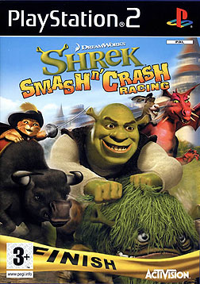

Shrek
Shrek (рус. Шрек) — компьютерная игра по мотивам полнометражного мультфильма «Шрек». Официальный релиз игры состоялся 14 ноября 2001 года для игровой приставки Xbox.
Порт игры на Nintendo GameCube, названный Shrek Extra Large, вышел 31 октября 2002 года в Северной Америке и 22 октября 2003 года в странах региона PAL.
Это была первая компьютерная игра из серии Шрек, возрастной рейтинг которой ESRB оценила как T (для детей старше 13 лет).
Основной особенностью игры Шрек является постоянное движение. Шрек и Фиона живут счастливой жизнью до тех пор, пока Фиона не попала в руки к злому волшебнику Мерлину, который переместил её на границу леса, в котором жила лягушка. Лягушка могла давать полезные советы. Шрек получает Волшебное зеркало и книгу, которая помогает ему проходить через незнакомые места.
Shrek: Extra Larg
Shrek: Extra Large (рус. «Шрек: Большое дополнение») — приключенческая экшн-видеоигра, изданная в 2002 году компанией Digital Illusions CE. Игра создана на основе серии мультфильмов «Шрек» и является эксклюзивом для платформы Nintendo GameCube. Рейтинг ESRB — T — для подростков.
Игрок управляет Шреком и путешествует в целях поиска Фионы. Шрек посещает 10 мест, и, за исключением финального, в каждом организовывает мероприятия.
Является ремейком версии игры Shrek, вышедшей годом ранее, для платформы Xbox.
Shrek 2: The Game
Shrek 2: The Game (с англ. — «Шрек 2: Игра») — компьютерная игра в жанре аркада, выпущенная компанией KnowWonder и изданная Activision для Windows в 2004 году. Игра по мотивам мультфильма от Dreamworks — «Шрек 2». Компьютерная версия игры издана в России компанией 1С.
Огр по имени Шрек и его новая жена — принцесса Фиона вернулись на болото, где их ждёт их друг Осёл, который сообщает о том, что героям нужно срочно ехать в Тридевятое королевство к родителям Фионы — королю Гарольду и королеве Лилиан. Гарольд никогда не любил огров, и поэтому позвал убийцу огров — Кота в сапогах, чтобы убить Шрека. Но Кот не справился с заданием, и рассказал Шреку всю подноготную и вступил в их команду. Далее герои посетили завод по производству эликсиров и украли эликсир Happily Ever After. Герои выпили эликсир и заснули в сарае. На следующее утро Шрек и Фиона превратились в людей, а Осел — в белого коня. Героев при попытке вернуться во дворец посадили в тюрьму, но они сбежали и штурмовали дворец, где Крёстная фея пыталась убить Шрека, но потерпела поражение. Шрек и Фиона превратились обратно в огров, Осел — обратно в осла, Гарольд — в лягушку, и свадебный бал прошёл точно по намеченному плану.
Shrek SuperSlam
Shrek SuperSlam — это файтинг, который проходится аналогично играм из серии Power Stone. В игре есть три режима коллективной игры: «Король горы», «Ближний бой» и «Слэмогеддон».
В режиме «Царь горы» целью игры является остаться на вершине самого длинного холма, в то время, пока противники дерутся друг с другом. Выигрывает игрок, который первым наберёт 30 очков. Чем дольше игрок находится на холме, тем больше очков он получит. В «Ближнем бою» задачей игры состоит в течение 2 минут заработать как можно больше очков слэмов. Как только «Slam» будет заполнен полностью, появится сообщение о возможности атаки. После того, как игрок пополнил свой банк, он может использовать атаку слэмом, которая может поразить сразу несколько противников. За каждого противника, которого персонаж ударил, игрок будет получать одно очко, но если игрок заслэмляется, то он теряет одно очко. Выигрывает игрок, который за определённое количество времени собрал наибольшее количество очков слэмов. В «Слэмогеддоне» за любую атаку начисляется слэмы. Но если игрок успел получить «Сок максимального слэма» — зелье Слэмогеддона, и игрок поразил своим слэмом противников, ничего не происходит.
Shrek Smash n' Crash Racing
Shrek Smash n' Crash Racing — видеоигра в жанре картинг-гонок, выпущенная в ноябре 2006 года. Игра основана на франшизе «Шрек » . Игроки могут играть за одного из двенадцати персонажей Шрека , используя гоночные и боевые навыки, чтобы побеждать других гонщиков. Она была выпущена для систем GameCube , PlayStation 2 , PlayStation Portable , Nintendo DS и Game Boy Advance . Shrek Smash n' Crash Racing стала последней игрой, основанной на фильме DreamWorks Animation, выпущенной на GameCube.
Оригинальную музыку для игры написал Финн Робертсон .
Shrek Smash n' Crash Racing — видеоигра о гонках на картах . Сначала игроки должны выбрать из списка двенадцати разных персонажей из вселенной Шрека . Максимальное количество гонщиков на трассе в любой момент времени — шесть. У каждого из персонажей есть особые характеристики, которые не отображаются в игре. Все остальные гонщики, не являющиеся игроками, будут управляться компьютером и выбираться случайным образом.
Затем игрок может выбрать трассу или кубковый турнир, на котором он хочет играть. После выбора трассы начнется гонка. Цель гонок — занять первое место. На трассах находятся бочки с предметами, внутри которых находятся предметы. Предметы используются в качестве преимущества для помощи гонщику.
Трассы также заполнены препятствиями и короткими путями, которые могут как помочь, так и навредить гонщикам. На трассе у персонажей также есть специальный предмет, который можно использовать для атаки на другие карты или препятствия. Если другой гонщик попадет под специальный предмет, то он вылетит из игры. Персонажи также могут прыгать, чтобы избегать препятствий или достигать других частей трассы. Гонщик, занявший первое место в турнирном режиме или обычной гонке, получает трофей.
Shrek the Third
Шрек Третий (англ. Shrek the Third) — компьютерная игра по мотивам одноимённого анимационного фильма студии DreamWorks Animation, разработанная 7 Studios, Gameloft, Amaze Entertainment и Vicarious Visions и изданная компанией Activision. Релиз игры состоялся 15 мая 2007 года для Xbox 360, PlayStation 2, Wii, персональных компьютеров, Nintendo DS и Game Boy Advance. PSP-версия была выпущена в июне.
Сюжет игры Shrek the Third базируется на третьей части фильма: Шрек ищет Артура, чтобы сделать его королём Далёкого-Далёкого королевства, пока принц Чарминг пытается штурмом взять город и силой захватить трон. Во время игрового процесса игроки будут играть за следующих персонажей: Шрек, Осёл, Кот в сапогах, Артур, принцесса Фиона и Спящая Красавица. Игра состоит из 20 уровней, некоторые из которых отклоняются от сюжета, также в игре имеется одиночный и сетевой режимы. Отзывы были различными, версии на Xbox 360, Wii, PS2 и GBA получили, по данным сайта Game Rankings, менее 60 % положительных откликов, в то время как версии для PSP, DS и PC получили более 60 % положительных мнений.
Shrek Forever After
«Шрек навсегда» (Shrek Forever After, также известная как Shrek 4 и Shrek Forever After: The Final Chapter) — приключенческий экшн. Сюжет создан по мотивам мультфильма с одноимённым названием. Игра была выпущена 18 мая 2010 года в Северной Америке. Русской локализацией игры занималась компания «1С».
Игра основана на фильме «Шрек навсегда». Игроки могут играть за Шрека, Фиону, Осла и Кота в сапогах. Доступен мультиплеер, поддерживающий до четырёх игроков. Герои могут путешествовать по различным мирам и решать головоломки.
Shrek: Hassle at the Castle
Shrek: Hassle at the Castle — 2D beat 'em up выпущенный для Game Boy Advance. Игра основана на мультфильме «Шрек» и содержит персонажей из него. В игре в качестве играбельных персонажей присутствуют Шрек, Принцесса Фиона и Осёл. Они путешествуют по различным главам игры, которые представляют разные этапы мультфильма. Это единственная игра в серии, которая следует сюжету первого мультфильма. Год спустя было выпущено продолжение этой игры под названием Shrek: Reekin' Havoc.